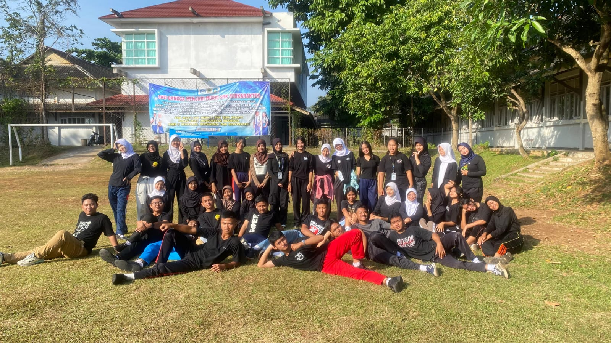
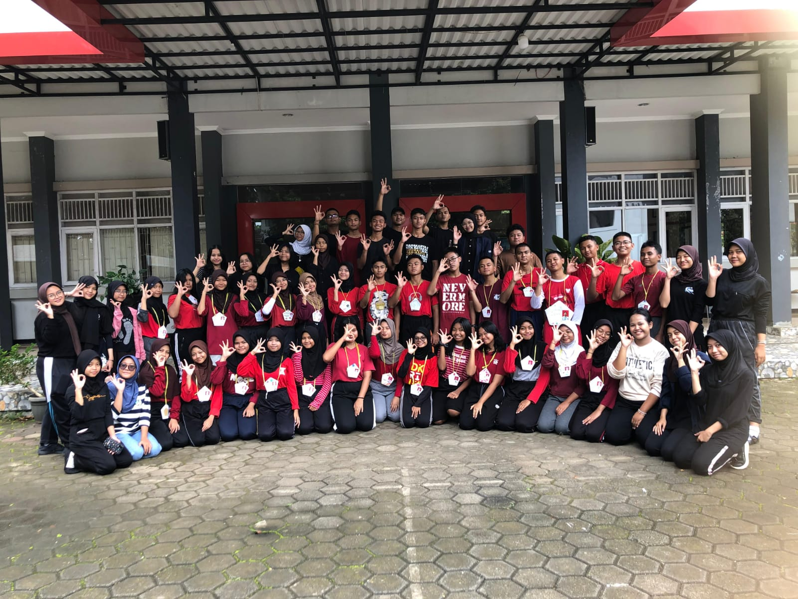
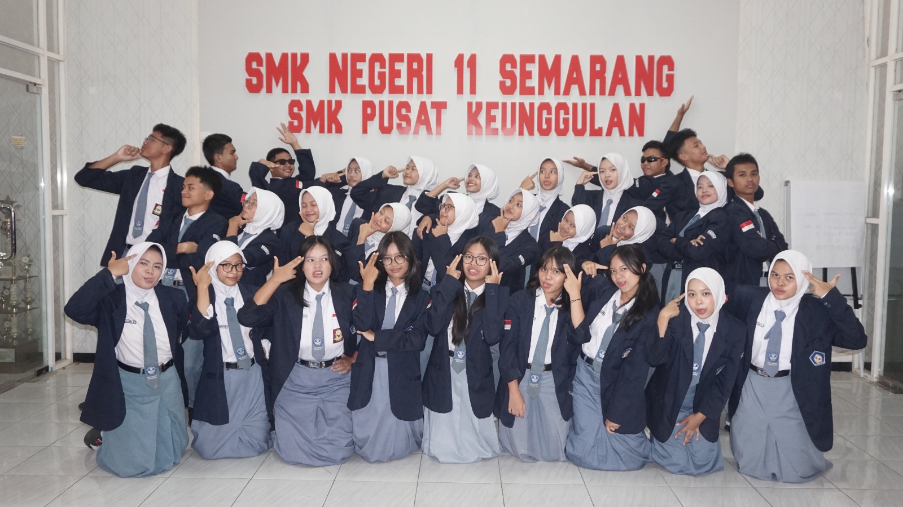
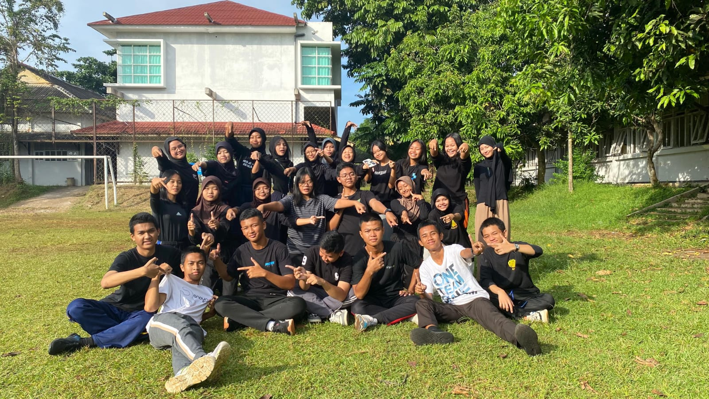
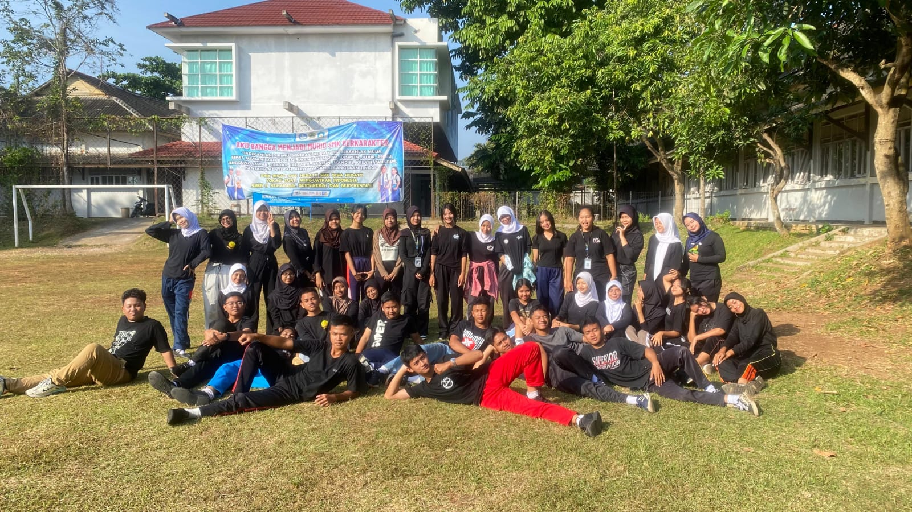
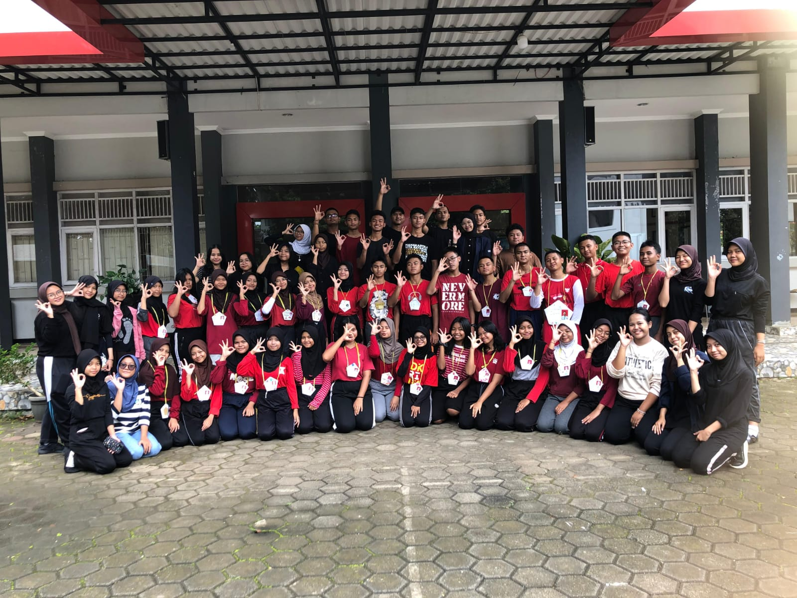
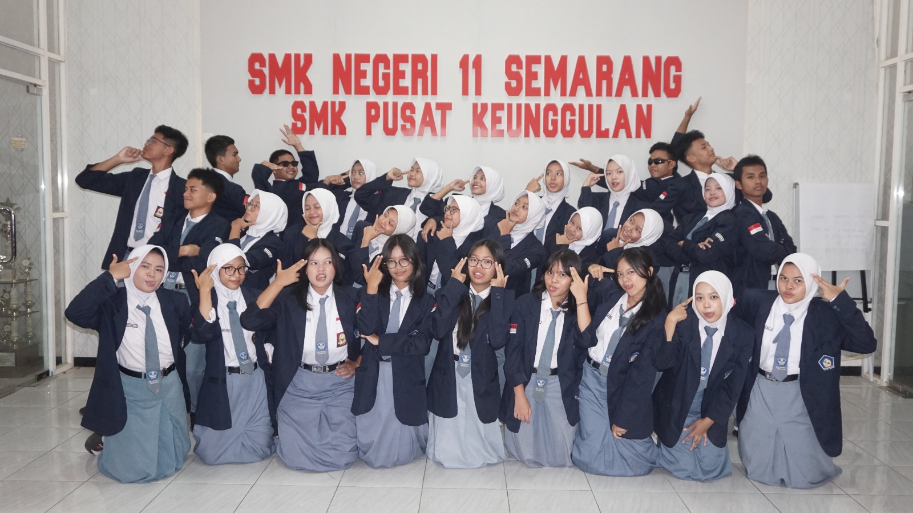
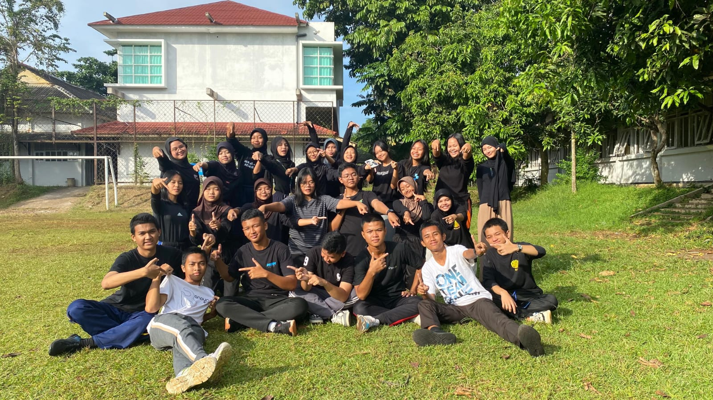

Sekolah Dasar | 2015 - 2021
SD NEGERI 03 PUDAKPAYUNG
Di masa ini, saya mulai beradaptasi dengan berbagai orang dan pembelajaran, juga membuka mata soal berbagai hal. Saya juga aktif di lingkungan sekolah, seperti pramuka, dokter kecil, hingga beberapa perlombaan. Di jenjang ini, saya bersyukur dapat meraih beberapa prestasi, seperti Juara I Lomba Sesorah tingkat Kota Semarang dan Juara Harapan I Parade Puisi tingkat Kota Semarang. Dengan demikian, saya dapat berbicara jelas, hangat, dan bermakna sehingga saya dapat berkontribusi secara efektif di setiap kesempatan.
Sekolah Menengah Pertama | 2021 - 2023
SMP NEGERI 21 SEMARANG
Di masa Sekolah Menengah Pertama, saya aktif mengikuti berbagai kegiatan sekolah dan bergabung dalam organisasi seperti Rohis, MPK, dan Jurnalistik. Melalui Jurnalistik, saya mulai mengenal dunia desain grafis ketika ikut membantu menyusun majalah BIS PATAS. Dari perjalanan itu, saya bersyukur dapat meraih beberapa prestasi, seperti Juara II Lomba Pidato Semesta dan Juara III Lomba Jurnalistik Aplikasi. Pengalaman tersebut juga membentuk rasa tanggung jawab dan kepemimpinan saya ketika dipercaya menjadi wakil di Organisasi Rohis.

 






